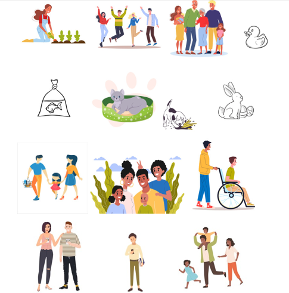

APRENDO A VALERME POR MÍ MISMO
Unidad 4 - Actividades
Actividad 1
Observe atentamente el video: "La familia para niños - Ana y su familia - Aprende los miembros de la familia" y comente con la persona docente o con la persona facilitadora lo narrado en la historia.
Referencia
Smile and Learn - Español. (31 de julio de 2018). La familia para niños. Ana y su familia. Aprende los miembros de la familia. [Video]. Youtube. https://bit.ly/3nRxBf7
Actividad 2. Pregunta de Elección Múltiple
Solución
Solución
Solución
Solución
Actividad 3
En las imágenes que se da a continuación, se presentan varias personas y animales. Coloree o encierre con un círculo los que usted considere necesarios, según los miembros que conforman su familia, es decir, los que viven bajo su mismo techo. Para ello pídale a su docente ayuda para hacer la actividad en Paint 3 D. (Clic derecho sobre la imagen, copiar imagen, abrir Paint y pegar imagen para realizar el ejercicio).

Obra publicada con Licencia Creative Commons Reconocimiento No comercial Compartir igual 4.0